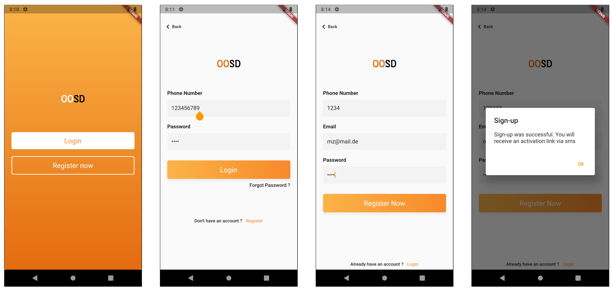
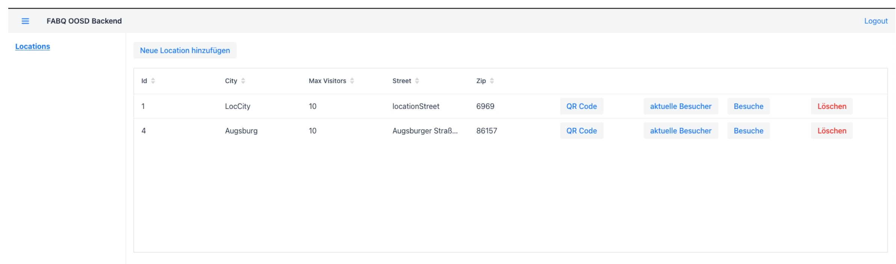
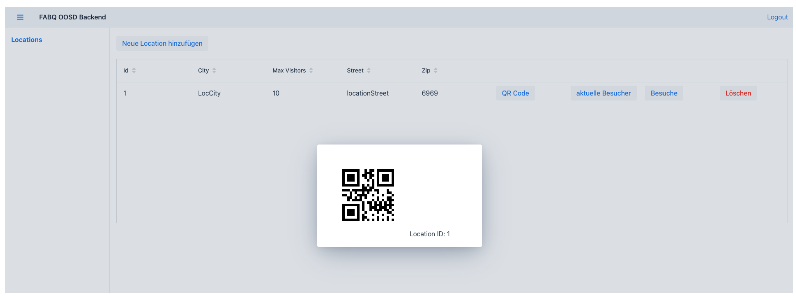

Corona Management System
Note: 1,0
Dieses System besteht aus zwei Frontents (Client + Owner) und einem Backend. Owner können sich durch eine mit Vaadin umgesetzte Web-Schnittstelle anmelden und Räume erstellen für die sie dann einen QR-Code drucken können. Mit der in Flutter implementierten Mobile App können sich Clients dann drch das Scannen den QR-Codes anmelden und auch wieder abmelden. Der Owner hat durch die Web-App zugriff auf Informationen über Clients
Das System wird ausführlich in der unten verklinkten PDF beschrieben



